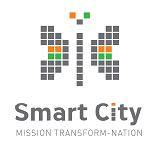

The Vidhana Soudha located in Bangalore, is the seat of the state legislature of Karnataka.Kengal Hanumanthaiah is credited with the conception and construction of the Vidhana Soudha.The foundation stone was laid by the then Prime Minister of India, Jawaharlal Nehru and then chief minister K. C. Reddy, on 13 July 1951 constructed in a style sometimes described as Mysore Neo-Dravidian, and incorporates elements of Dravidian styles. The construction was completed in 1956. The Vidhana Soudha has four floors above and one floor below ground level and sprawls across an area of 700 by 350 metres (2,300 by 1,150 ft). It is the largest Legislative building in India. Its eastern face has a porch with 12 granite columns, 12 metres (40 ft) tall. Leading to the foyer is a flight of stairs with 45 steps, more than 61 metres (200 ft) wide. The central dome, 18 metres (60 ft) in diameter, is crowned by a likeness of the Indian national emblem.The front of the building is inscribed with the slogan "Government's Work is God's Work"
Welcome to The Best Water Park in Bangalore - Wonderla Bengaluru! The loudest, craziest, and the most amazing part of town. This simply is not just any amusement park in Bangalore, but a world of breath-taking charm. It’s a place to celebrate the smaller moments and share big wonders. Get on one of the 60+ exhilarating rides, or simply laze by the pool under the bright sun. But whatever you do, here, everybody gets to enjoy a wonderful time together by the end of the day. And that's why we are touted as the best Amazement Park in India! The Rides of Change Looking for fun things to do in Bangalore today? There’s no better place to experience something new together than Wonderla Bengaluru! Make sure you check out our water rides, land rides and our most thrilling attractions in Bangalore.
Lumbini Gardens is a public park on the banks of the Nagawara Lake in Bangalore, Karnataka named after Lumbini of Nepal. It is dedicated to Lord Budhha. Although the garden is mainly a national park, it is a treat to the eyes with its serene landscapes and lots of greenery. Located near the Nagwara lake, the Lumbini garden is one of its kind garden attraction of Banglore. The garden garners plenty of visitors every day of the week. The beautiful, serene environment of the lake hosts the visitors with mesmerising view and activities that people come to enjoy with their loved ones. The Lumbini Gardens is a very beautiful kid's park and has a boating club which the visitors enjoy very much. Apart from all these the garden has beautiful fountains and a stretch of 1.5 km to walk through with a view of the lake and gorgeous greenery on the other side. The garden also houses some beautiful statues and a host of rare plants. At night, the garden is illuminated with various lights which is a pleasure to see. And guess what? That's not all! The Lumbini garden is also known for the food stalls and famous eateries nearby. Undoubtedly, Lumbini garden has made its place among the crowd's favourite weekend destinations.
ISKCON Sri Radha Krishna temple was inaugurated in the year 1997. It is not just a temple, but a cultural complex housing the temples dedicated to the Deities of Sri Sri Radha Krishnachandra, Sri Sri Krishna Balarama, Sri Sri Nitai Gauranga, Sri Srinivasa Govinda, Sri Prahlada Narasimha, Bhakta Hanuman, Garudadeva and Srila Prabhupada, Founder Acharya of ISKCON. ISKCON Bangalore is a charitable society with the objective of propagating Krishna Consciousness all over the world, as explained by Srila Prabhupada, whose teachings are based on Bhagavad-gita and Srimad Bhagavatam.
Bangalore Fort began in 1537 as a mud fort.The builder was Kempe Gowda I, a vassal of the Vijaynagar Empire and the founder of Bangalore. Hyder Ali in 1761 replaced the mud fort with a stone fort and it was further improved by his son Tipu Sultan in the late 18th century. It was damaged during an Anglo-Mysore war in 1791. It still remains a good example of 18th-century military fortification. The army of the British East India Company, led by Lord Cornwallis on 21 March 1791 captured the fort in the siege of Bangalore during the Third Mysore War (1790–1792). At the time the fort was a stronghold for Tipu Sultan. Today, the fort's Delhi gate, on Krishnarajendra Road, and two bastions are the primary remains of the fort. A marble plaque commemorates the spot where the British breached fort's wall, leading to its capture. The old fort area also includes Tipu Sultan's Summer Palace, and his armoury. The fort has provided the setting for the treasure hunt in the book Riddle of the Seventh Stone.
UB City is a luxury business district in Bangalore, India. It consists of 6 blocks, UB Tower, Kingfisher Plaza, Concorde, Canberra, Comet and Kingfisher Towers, with a total built up area of over 16 lakh sq ft.[1] Pioneered by the UB Group in Joint Venture with Prestige Group,[2] it is built on 13 acres (53,000 m2) of land and hosts 1,000,000 sq ft (93,000 m2) of high-end commercial, retail and service apartment space.
Snow City is Bangalore's first snow and ice park spread across 12,500 square feet. Enjoy eco-friendly snow while exploring its fantasy snow castle, the rocky snow mountain and several other fun activities like snow sliding and rafting. Don't miss out on the last 15 minutes with colourful disco lights and music turned on! Snow City also has a 9D theatre that screens short films in addition to interactive games like laser tag and shooting - both for an extra fee.
Government Museum (Bangalore) established in 1865 by the Mysore State with the guidance of Surgeon Edward Balfour who founded the museum in Madras and supported by the Chief Commissioner of Mysore, L.B. Bowring[1] is one of the oldest museums in India[3] and the second oldest museum in South India.[1] It is now an archaeological museum and has a rare collection of archaeological and geological artifacts including old jewellery, sculpture, coins and inscriptions. The museum is also home to the Halmidi inscription,[4] the earliest Kannada inscription (450 AD).
Freedom Park is located in the Central Business District of the city of Bengaluru, Karnataka, India. It was formerly the Central Jail.[1] It was opened to the public in November 2008. A part of it has been allotted for protests. When a state of emergency was proclaimed in India in 1975, several opposition leaders including Atal Bihari Vajpayee and L.K. Advani were arrested and jailed at this venue. It also hosted the India Against Corruption (IAC) supported Anna Hazare indefinite fast for governmental action in the enactment of the Lok Pal bill.
Nandi Hills (Anglicised forms include Nandidurg and Nandydoorg) is an ancient hill fortress built by Ganga Dynasty and later enlarged and strengthened by Tipu Sultan in southern India, in the Chikkaballapur district of Karnataka state. It is 10 km from Chickballapur town and approximately 60 km from the city of Bengaluru. The hills are near the town of Nandi. In traditional belief, the hills are the origin of the Arkavathy river, Ponnaiyar River, Palar River, Papagni and Penna River. Watching the sunrise at Nandi Hills is popular with tourists.The first ever SAARC summit hosted by India was held at Nandi Hills in 1986.Nandi
Tipu Sultan's Summer Palace, in Bangalore, India, is an example of Indo-Islamic architecture and was the summer residence of the Mysorean ruler Tipu Sultan. Hyder Ali commenced its construction within the walls of the Bangalore Fort, and it was completed during the reign of Tipu Sultan in 1791. After Tipu Sultan's death in the Fourth Anglo-Mysore War, the British Administration used the palace for its secretariat before moving to Attara Kacheri in 1868. Today the Archaeological Survey of India maintains the palace, which is located at the center of Old Bangalore near the Kalasipalyam bus stand, as a tourist spot.
St. Mary's Basilica is located in the Archdiocese of Bangalore in the Indian state of Karnataka. It is among the oldest churches in Bangalore and the first church in the state that has been elevated to the status of a minor basilica.It is famous for festivities held during the St. Mary's Feast in the month of September each year, attracting devotees from the entire region of Bangalore.


Government of Karnataka (GoK) is a pioneer in leveraging information and communication technology (ICT) for better governance and is at the forefront of implementation of electronic-Governance (e-Governance) initiatives in the country. The Centre for e-Governance (CeG) is a nodal agency established in the year 2006, under the Societies Registration Act, to steer the e-governance policies and strategies in the state. It is the custodian of the e-governance core infrastructure and basic administrative reform based applications created in the state. In fact, it is unique in the state as it is placed in Department of Personnel & Administrative Reforms (DPAR) which is directly accountable to the Chief Minister of the state. The services of CeG over the years has proved to be immensely contributive in realizing the benefits of IT for common man. True to the ethos of the IT sector that demands autonomous functionality, the CeG spreads open its wings to various innovative projects aiming to empower citizens through the support of e-Governance. Today, the state can boast of state-of-the-art two Data Centers, MPLS technology based Karnataka State Wide Area Network and core applications such as e-procurement and HRMS groomed under CeG with cent percent performance quality and standards, even setting certain benchmarks.
Government of Karnataka (GoK) is a pioneer in leveraging information and communication technology (ICT) for better governance and is at the forefront of implementation of electronic-Governance (e-Governance) initiatives in the country. The Centre for e-Governance (CeG) is a nodal agency established in the year 2006, under the Societies Registration Act, to steer the e-governance policies and strategies in the state. It is the custodian of the e-governance core infrastructure and basic administrative reform based applications created in the state. In fact, it is unique in the state as it is placed in Department of Personnel & Administrative Reforms (DPAR) which is directly accountable to the Chief Minister of the state. The services of CeG over the years has proved to be immensely contributive in realizing the benefits of IT for common man. True to the ethos of the IT sector that demands autonomous functionality, the CeG spreads open its wings to various innovative projects aiming to empower citizens through the support of e-Governance. Today, the state can boast of state-of-the-art two Data Centers, MPLS technology based Karnataka State Wide Area Network and core applications such as e-procurement and HRMS groomed under CeG with cent percent performance quality and standards, even setting certain benchmarks.
Government of Karnataka (GoK) is a pioneer in leveraging information and communication technology (ICT) for better governance and is at the forefront of implementation of electronic-Governance (e-Governance) initiatives in the country. The Centre for e-Governance (CeG) is a nodal agency established in the year 2006, under the Societies Registration Act, to steer the e-governance policies and strategies in the state. It is the custodian of the e-governance core infrastructure and basic administrative reform based applications created in the state. In fact, it is unique in the state as it is placed in Department of Personnel & Administrative Reforms (DPAR) which is directly accountable to the Chief Minister of the state. The services of CeG over the years has proved to be immensely contributive in realizing the benefits of IT for common man. True to the ethos of the IT sector that demands autonomous functionality, the CeG spreads open its wings to various innovative projects aiming to empower citizens through the support of e-Governance. Today, the state can boast of state-of-the-art two Data Centers, MPLS technology based Karnataka State Wide Area Network and core applications such as e-procurement and HRMS groomed under CeG with cent percent performance quality and standards, even setting certain benchmarks.
Government of Karnataka (GoK) is a pioneer in leveraging information and communication technology (ICT) for better governance and is at the forefront of implementation of electronic-Governance (e-Governance) initiatives in the country. The Centre for e-Governance (CeG) is a nodal agency established in the year 2006, under the Societies Registration Act, to steer the e-governance policies and strategies in the state. It is the custodian of the e-governance core infrastructure and basic administrative reform based applications created in the state. In fact, it is unique in the state as it is placed in Department of Personnel & Administrative Reforms (DPAR) which is directly accountable to the Chief Minister of the state. The services of CeG over the years has proved to be immensely contributive in realizing the benefits of IT for common man. True to the ethos of the IT sector that demands autonomous functionality, the CeG spreads open its wings to various innovative projects aiming to empower citizens through the support of e-Governance. Today, the state can boast of state-of-the-art two Data Centers, MPLS technology based Karnataka State Wide Area Network and core applications such as e-procurement and HRMS groomed under CeG with cent percent performance quality and standards, even setting certain benchmarks.
Government of Karnataka (GoK) is a pioneer in leveraging information and communication technology (ICT) for better governance and is at the forefront of implementation of electronic-Governance (e-Governance) initiatives in the country. The Centre for e-Governance (CeG) is a nodal agency established in the year 2006, under the Societies Registration Act, to steer the e-governance policies and strategies in the state. It is the custodian of the e-governance core infrastructure and basic administrative reform based applications created in the state. In fact, it is unique in the state as it is placed in Department of Personnel & Administrative Reforms (DPAR) which is directly accountable to the Chief Minister of the state. The services of CeG over the years has proved to be immensely contributive in realizing the benefits of IT for common man. True to the ethos of the IT sector that demands autonomous functionality, the CeG spreads open its wings to various innovative projects aiming to empower citizens through the support of e-Governance. Today, the state can boast of state-of-the-art two Data Centers, MPLS technology based Karnataka State Wide Area Network and core applications such as e-procurement and HRMS groomed under CeG with cent percent performance quality and standards, even setting certain benchmarks.
Government of Karnataka (GoK) is a pioneer in leveraging information and communication technology (ICT) for better governance and is at the forefront of implementation of electronic-Governance (e-Governance) initiatives in the country. The Centre for e-Governance (CeG) is a nodal agency established in the year 2006, under the Societies Registration Act, to steer the e-governance policies and strategies in the state. It is the custodian of the e-governance core infrastructure and basic administrative reform based applications created in the state. In fact, it is unique in the state as it is placed in Department of Personnel & Administrative Reforms (DPAR) which is directly accountable to the Chief Minister of the state. The services of CeG over the years has proved to be immensely contributive in realizing the benefits of IT for common man. True to the ethos of the IT sector that demands autonomous functionality, the CeG spreads open its wings to various innovative projects aiming to empower citizens through the support of e-Governance. Today, the state can boast of state-of-the-art two Data Centers, MPLS technology based Karnataka State Wide Area Network and core applications such as e-procurement and HRMS groomed under CeG with cent percent performance quality and standards, even setting certain benchmarks.
Government of Karnataka (GoK) is a pioneer in leveraging information and communication technology (ICT) for better governance and is at the forefront of implementation of electronic-Governance (e-Governance) initiatives in the country. The Centre for e-Governance (CeG) is a nodal agency established in the year 2006, under the Societies Registration Act, to steer the e-governance policies and strategies in the state. It is the custodian of the e-governance core infrastructure and basic administrative reform based applications created in the state. In fact, it is unique in the state as it is placed in Department of Personnel & Administrative Reforms (DPAR) which is directly accountable to the Chief Minister of the state. The services of CeG over the years has proved to be immensely contributive in realizing the benefits of IT for common man. True to the ethos of the IT sector that demands autonomous functionality, the CeG spreads open its wings to various innovative projects aiming to empower citizens through the support of e-Governance. Today, the state can boast of state-of-the-art two Data Centers, MPLS technology based Karnataka State Wide Area Network and core applications such as e-procurement and HRMS groomed under CeG with cent percent performance quality and standards, even setting certain benchmarks.
Government of Karnataka (GoK) is a pioneer in leveraging information and communication technology (ICT) for better governance and is at the forefront of implementation of electronic-Governance (e-Governance) initiatives in the country. The Centre for e-Governance (CeG) is a nodal agency established in the year 2006, under the Societies Registration Act, to steer the e-governance policies and strategies in the state. It is the custodian of the e-governance core infrastructure and basic administrative reform based applications created in the state. In fact, it is unique in the state as it is placed in Department of Personnel & Administrative Reforms (DPAR) which is directly accountable to the Chief Minister of the state. The services of CeG over the years has proved to be immensely contributive in realizing the benefits of IT for common man. True to the ethos of the IT sector that demands autonomous functionality, the CeG spreads open its wings to various innovative projects aiming to empower citizens through the support of e-Governance. Today, the state can boast of state-of-the-art two Data Centers, MPLS technology based Karnataka State Wide Area Network and core applications such as e-procurement and HRMS groomed under CeG with cent percent performance quality and standards, even setting certain benchmarks.
Government of Karnataka (GoK) is a pioneer in leveraging information and communication technology (ICT) for better governance and is at the forefront of implementation of electronic-Governance (e-Governance) initiatives in the country. The Centre for e-Governance (CeG) is a nodal agency established in the year 2006, under the Societies Registration Act, to steer the e-governance policies and strategies in the state. It is the custodian of the e-governance core infrastructure and basic administrative reform based applications created in the state. In fact, it is unique in the state as it is placed in Department of Personnel & Administrative Reforms (DPAR) which is directly accountable to the Chief Minister of the state. The services of CeG over the years has proved to be immensely contributive in realizing the benefits of IT for common man. True to the ethos of the IT sector that demands autonomous functionality, the CeG spreads open its wings to various innovative projects aiming to empower citizens through the support of e-Governance. Today, the state can boast of state-of-the-art two Data Centers, MPLS technology based Karnataka State Wide Area Network and core applications such as e-procurement and HRMS groomed under CeG with cent percent performance quality and standards, even setting certain benchmarks.
Government of Karnataka (GoK) is a pioneer in leveraging information and communication technology (ICT) for better governance and is at the forefront of implementation of electronic-Governance (e-Governance) initiatives in the country. The Centre for e-Governance (CeG) is a nodal agency established in the year 2006, under the Societies Registration Act, to steer the e-governance policies and strategies in the state. It is the custodian of the e-governance core infrastructure and basic administrative reform based applications created in the state. In fact, it is unique in the state as it is placed in Department of Personnel & Administrative Reforms (DPAR) which is directly accountable to the Chief Minister of the state. The services of CeG over the years has proved to be immensely contributive in realizing the benefits of IT for common man. True to the ethos of the IT sector that demands autonomous functionality, the CeG spreads open its wings to various innovative projects aiming to empower citizens through the support of e-Governance. Today, the state can boast of state-of-the-art two Data Centers, MPLS technology based Karnataka State Wide Area Network and core applications such as e-procurement and HRMS groomed under CeG with cent percent performance quality and standards, even setting certain benchmarks.
Government of Karnataka (GoK) is a pioneer in leveraging information and communication technology (ICT) for better governance and is at the forefront of implementation of electronic-Governance (e-Governance) initiatives in the country. The Centre for e-Governance (CeG) is a nodal agency established in the year 2006, under the Societies Registration Act, to steer the e-governance policies and strategies in the state. It is the custodian of the e-governance core infrastructure and basic administrative reform based applications created in the state. In fact, it is unique in the state as it is placed in Department of Personnel & Administrative Reforms (DPAR) which is directly accountable to the Chief Minister of the state. The services of CeG over the years has proved to be immensely contributive in realizing the benefits of IT for common man. True to the ethos of the IT sector that demands autonomous functionality, the CeG spreads open its wings to various innovative projects aiming to empower citizens through the support of e-Governance. Today, the state can boast of state-of-the-art two Data Centers, MPLS technology based Karnataka State Wide Area Network and core applications such as e-procurement and HRMS groomed under CeG with cent percent performance quality and standards, even setting certain benchmarks.